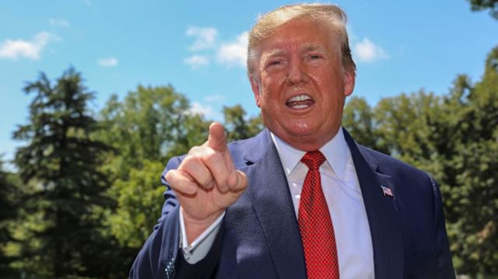

Trump anunció el bloqueo naval del Estrecho de Ormuz y amenazó con destruir lo que queda de Irán
El presidente de Estados Unidos, Donald Trump, publicó en Truth Social un mensaje en el que anuncia que la Marina estadounidense comenzará de inmediato a bloquear todo buque que intente entrar o salir del Estrecho de Ormuz.

El presidente de Estados Unidos, Donald Trump, publicó este domingo un mensaje explosivo en su red social Truth Social que eleva drásticamente la tensión en el Golfo Pérsico. Según sus propias palabras, las conversaciones entre Washington y Teherán avanzaron en la mayoría de los puntos, pero fracasaron en el único que realmente importaba para Estados Unidos: el programa nuclear iraní. Como consecuencia directa de ese fracaso, Trump anunció que la Marina estadounidense comenzará de inmediato a bloquear todos los buques que intenten entrar o salir del Estrecho de Ormuz, la vía marítima por donde transita el 20% del petróleo mundial. El mensaje, escrito en el tono característico de Trump con mayúsculas y sin filtros, no deja lugar a interpretaciones: Estados Unidos está dispuesto a escalar el conflicto hasta sus últimas consecuencias.
Los anuncios concretos del mensaje son de una gravedad inusual. Trump declaró que la Marina estadounidense buscará e interceptará en aguas internacionales a todo buque que haya pagado un peaje a Irán para atravesar el estrecho, al que calificó como un "acto ilegal de extorsión". Además, anunció que comenzarán a destruir las minas que Irán colocó en el Estrecho y advirtió que cualquier iraní que dispare contra un buque pacífico será, en sus propias palabras, "explotado al infierno". El tono del mensaje fue aún más lejos al hacer un repaso del estado militar de Irán: "Su Marina se ha ido, su Fuerza Aérea se ha ido, su Antiaérea y Radar son inútiles", escribió Trump, describiendo un país cuyas capacidades defensivas habrían quedado gravemente dañadas tras los ataques previos de Estados Unidos e Israel. Y cerró con una advertencia final: en el momento que considere apropiado, el ejército estadounidense "terminará con lo poco que queda de Irán".
El contexto geopolítico en el que llega este mensaje es de una complejidad extrema. El Estrecho de Ormuz había sido bloqueado por la Guardia Revolucionaria iraní semanas atrás, lo que disparó el precio del petróleo, cerró el espacio aéreo en varios países de la región y generó una crisis energética global. Ahora, con Estados Unidos anunciando su propio bloqueo naval desde el otro lado, el estrecho más vigilado del mundo se convierte en el escenario de una confrontación directa entre las dos potencias. Para los mercados globales, que apenas horas antes habían festejado el supuesto alto el fuego entre ambos países, la noticia es un balde de agua fría que amenaza con revertir las subas bursátiles y volver a disparar el precio del crudo.
La reacción de los mercados energéticos fue inmediata. Apenas se conoció el mensaje de Trump, el precio del barril de Brent, que es el crudo de referencia internacional, volvió a dispararse ante la perspectiva de un bloqueo naval simultáneo de las dos potencias sobre el Estrecho de Ormuz, la vía por donde circula una quinta parte del petróleo que consume el mundo. Los operadores del mercado energético entienden que un estrecho bloqueado por ambos lados no es un escenario de resolución rápida, y eso se traduce directamente en precios más altos. Las proyecciones de analistas que días atrás hablaban de un barril camino a los US$100 volvieron a cobrar vigencia, y algunos expertos ya no descartan que, si la situación se prolonga, el precio pueda superar ese umbral en cuestión de días.
Para Argentina, las implicancias de esta nueva escalada son concretas e inmediatas. Un Estrecho de Ormuz bloqueado por ambos bandos y una crisis militar abierta entre Estados Unidos e Irán volvería a presionar al alza el precio del petróleo, lo que impactaría sobre los costos de combustibles y transporte en el país. Al mismo tiempo, la incertidumbre global suele afectar el apetito inversor por mercados emergentes, complicando la estrategia del Gobierno de volver a los mercados internacionales de deuda. En un momento en que Argentina viene acumulando señales positivas en el frente económico, la reanudación de la crisis en Medio Oriente es una variable externa que el equipo económico deberá monitorear con especial atención en las próximas horas.